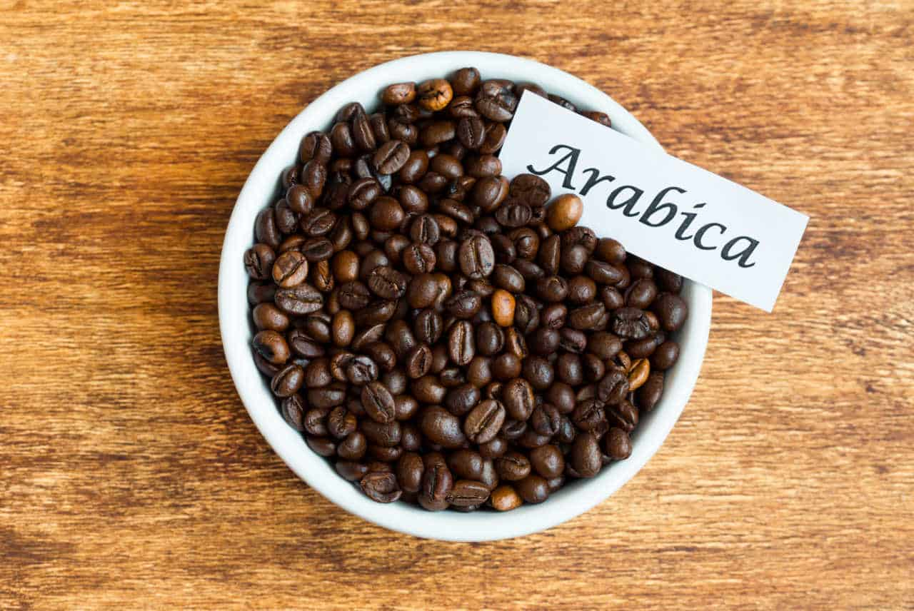

Arábica
Dulce y complejo, con acidez brillante y notas florales o frutales; cuerpo medio y aroma elegante. Contiene menos cafeína que la robusta, lo que realza su fineza. Suele cultivarse en altura media-alta y es la base de la mayoría de cafés de especialidad.

Robusta
Sabor intenso y más amargo, con matices terrosos o a cacao; cuerpo alto y crema abundante en espresso. Aroma menos complejo pero muy contundente. Alta en cafeína, resistente y productiva, es común en blends y en café soluble.

Liberica
Perfil singular con rasgos ahumados y amaderados, acompañados de toques frutales exóticos; cuerpo medio-alto y aroma penetrante. Cafeína similar o algo menor que la robusta. Grano grande y oblongo, producción limitada en África y el Sudeste Asiático.

Excelsa
Sabor vivo, ácido-frutal con guiños a vino o berries; cuerpo medio y aroma vibrante. Cafeína media y rendimiento moderado. Se usa a menudo en mezclas para aportar brillo y complejidad. (hoy considerada parte de la libérica)